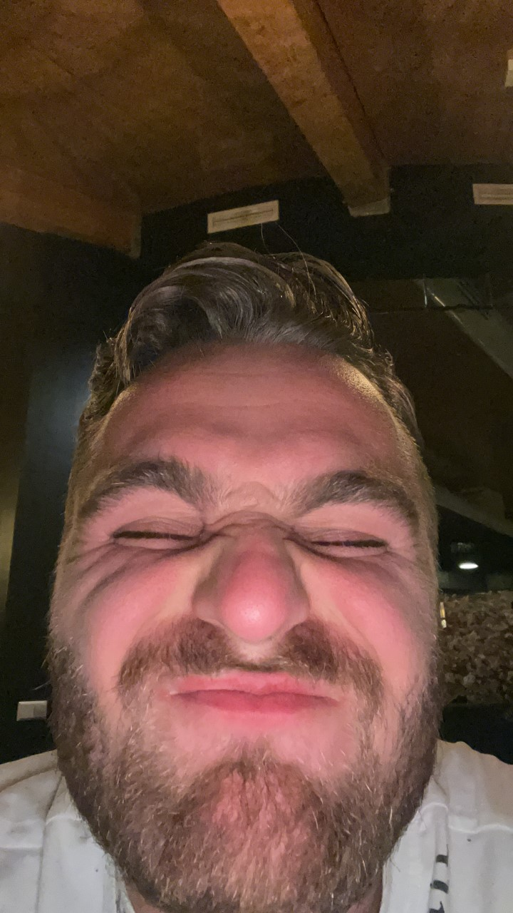
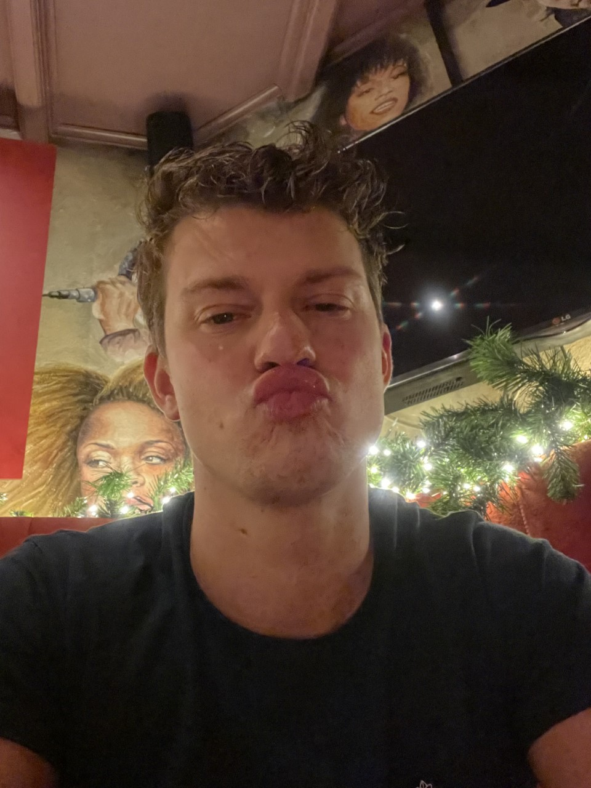

Thom Berkvens |
|
|  | Thom is sinds 2022 brouwer en doet dit puur voor zijn plezier. Persoonlijk is hij erg fan van de donkere bieren zoals de Bock, echter kan je hem ook plezieren met een sterker biertje of de smaak van een goede IPA |
Silvan Oppie |
|
|  | Silvan is tevens sinds 2022 brouwer en mede eigenaar van Berkdeijn brouwerij. Zijn smaak ligt voornamelijk bij de sterkere bieren als de "dikke l*l tripel bier" en het "domme blondje". |
We hebben inmiddels een vaste afnemer. Klik hier om naar de pagina te gaan.